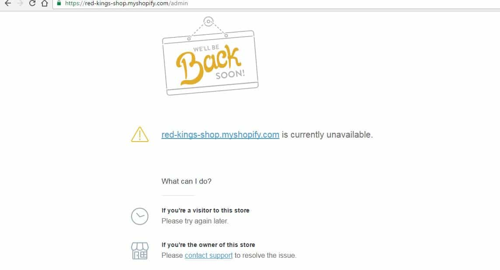

Daryush "Roosh" Valizadeh created ROK in October 2012. You can visit his blog at RooshV.com or follow him on Twitter and Facebook.


To launch a Return Of Kings t-shirt shop, I decided to go with Shopify because of how much easier it is to launch than a self-hosted store. I signed up with them, paid for one year of service, and did a pre-launch with a small group of readers, which resulted in 55 orders. As I began fulfilling them, Shopify pulled the plug on the entire store without warning, both the public storefront and the administrative backend with all our data.
Because of Shopify’s decision, my customers couldn’t access their order status, I had no way of informing them of what happened, and I couldn’t fulfill remaining orders. They put both me and 55 individuals in the lurch for no legitamate reason, forcing me to threaten legal action in order to get enough information to complete fulfillment of all orders.
There are many open source solutions for hosting a web store. The problem with them is that it takes extra time to create the store and maintain it, compared to services like Shopify, Squarespace, Bigcommerce, Magento, and others. To get the ROK store up and running as quickly as possible, I picked Shopify because of their competitive prices, not knowing that I was in for a far greater price down the road.
After I set up the store, featuring photos of yours truly in our first t-shirt, I collected email addresses of those who were most interested with participating in the pre-launch. I sent this group an email announcing the store and 55 of them took action, ordering a t-shirt or two.
The shirt in question
During this time, I received an email from a Shopify risk analyst by the name of Justin. He asked me to send in identification, which I was happy to do, and then asked me for more information:
Thanks for signing up with Shopify Payments and providing your ID.
In order to complete this initial review and ensure payments continue to be sent to your account we would need a little bit more information.
If you could send me any documentation you may have to validate the business that would be great. Examples would be a business bank statement, business license or business registration documents.
Could you also confirm where you’re primarily operating your business from?
I sent in my business incorporation documents, my IRS employer number designation, a recent bank statement (from my US-based bank), and a note of how I often travel through Eastern Europe, but that my business, bank accounts, and tax status all reside in the United States. In spite of that, Shopify unjustly classified me as a foreign business and gave me no means to dispute it.
Unfortunately, Shopify Payments is currently only available to companies that are based in Australia, Canada, United Kingdom and the United States, so we are not able to help with payments for your site right now. It’s frustrating for us to have to turn down good businesses, but we need to make sure we’re abiding by both US and international regulations. This means that any successful charges you have will be transferred to you on schedule, but you won’t be able to use Shopify Payments to accept any further payments.
[…]
Despite the information provided, our payment processing partner needs to ensure that the shops are based, operating from and have a substantial presence in the United States.
Ultimately, their decision is final and we must respect it.
According to the United States Federal Government and the IRS, my company is American and liable to pay American taxes, but to Shopify, I’m not an American business. The repercussion from this was that I couldn’t use Shopify’s own payment system (Shopify Payments) and had to pay a 2% extra commision on all orders, but this wasn’t a huge setback since there were many other payment options. I stayed the course because I wanted to do an on-time opening for my readers. I could always change stores later when it was convenient for me.
I have a worker based in the United States who maintains the shirt inventory and is charge of shipping them out. He printed most of the shipping labels for the first batch of orders and got ready for shipment. Before he was finished, I tried to log into the admin area of the store to monitor his progress and saw this:

The public storefront was also taken down. There was no longer any way for me to know who my customers were and what they ordered. I couldn’t even send them an email. I then received this from Justin:
Hello,
I’m afraid that after reviewing your information and website we believe your business presents a level of risk for customer disputes that we will be unable to support on Shopify.
We will transfer your existing payments to you, but will be unable to accept any additional payments on your behalf from Shopify Payments.
I’m sorry we won’t be able to help with your business.
Regards,
Justin
After I read this email, I was absolutely livid. I’ve been doing business on the internet for over fifteen years, and have never had a situation where a company pulled the rug out from under me and my customers in a way that I would personally classify as fraud.
They allowed me to take 55 orders, begin processing them, and then removed all access so I could not complete fulfillment. Imagine if you bought a shirt from me and then tried to access the store to see the status of your order. You would have no way to know what’s going on and would probably think that I took your money and ran. Shopify created a situation of unneeded worry for 55 individuals while directly hurting my reputation as if I’m running some sort a scam operation.
I called support and got on the line with a Level 1 support tech. I told him the situation as calmly as I could. His response: send an email reply to Justin. This was unacceptable because politely complying with him through email beforehand had only resulted in the deletion of my entire store without warning. I demanded to speak with someone from the risk department but the support tech told me there was no way to patch me through since he was working remotely. I was not calling Shopify’s main office but someone sitting in the middle of nowhere in his pajamas.
I also told the support tech that there was no further information asked of me, that this was a unilateral closing of my shop while I was in the middle of fulfillment. If Shopify is so worried about fraud, why would they leave 55 individuals in a position where they would believe they got defrauded and start initiating chargebacks with their credit card companies? I had no choice but to threaten legal action. I told the support tech that if Shopify doesn’t give me a way to complete these 55 orders, I would pursue all legal means as a response to what I saw as fraud.
The support tech put me on hold. After a few minutes of chatting with the risk team, he said that they have given him permission to send me a CSV file of all my orders. I decided that this was enough to satisfy the 55 individuals who purchased from me, but it still didn’t allow me an easyway to process exchanges or refunds if one of my customers was unsatisfied with the shirt.
Before ending the call with the support tech, I told him to relay to Justin and his team that they have created so much ill will by the way they have treated me that I will ensure that everyone knows exactly what they did, not just to me but also to my customers, who had an unfortunate experience because of their e-commerce platform.
Using the CSV file I received, I was able to contact my customers to let them know of the situation and complete fulfillment. Many of them have already received their t-shirts in the mail.
Shopify has every right to choose who to do business with, and I would not be particularly upset if they said I have to go elsewhere after fulfilling open orders, but the way they removed all access from my store is absolutely reprehensible and the stuff of nightmares for a business owner. No owner wants to wake up one day and find that everything is gone with no way to contact his customers. I have never been treated so poorly by an American internet business before, and I’m confident that any business who treats people in this way won’t be in business for long.
Maybe my situation was special, as I am often abroad, but Shopify operates as if its customers are not even allowed to take a vacation out of the country. If you log in from a certain IP address pool, their algorithms go crazy and here comes Justin to hit the delete button on your store with one click.
Whatever the reason, it’s important for existing and potential Shopify customers to know that it doesn’t take much for them to shut you down at any moment and for any cause. They will take all your information and prevent you from contacting customers or fulfilling orders. Your only recourse to receive your data is to threaten legal action, and that may be no guarantee of success. If any of my friends ask me about which web store platform to use, I will strongly warn them against Shopify.
As for the ROK store, I’ve decided to try the open source method. Hopefully we will be ready for orders again within two months.
Read Next: 10 Ideas For Starting A Business If You Don’t Have A Lot Of Money